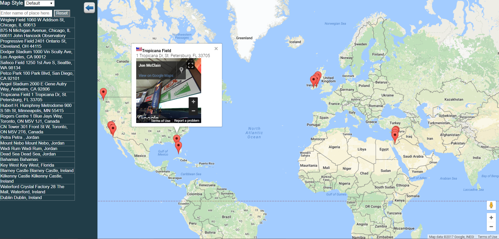

Frogger Clone
In this project I built a browser based clone of the classic arcade game frogger. Use the arrow keys to move, and increase your score by collecting gems and reaching the other side of the road. The technologies used in this project include HTML, CSS, Javascript and HTML Canvas.

Health Tracker
In this project I built a weekly calorie tracker. In short, common food items are entered in the search box at the top of the screen. Then they're added to the daily total by clicking the "Add" button, and saved to the daiy total using the "Save" button. The layout is built using Responsive Design. The technologies used include HTML, CSS, JQuery, Backbone, Underscore, JavaScript, AJAX and the Nutritionix API

World Map
In this project I built a world map marking several places I've traveled. Upon clicking any of the markers a street level view is displayed in a popup using the Google Street View API. Additionally, location information is displayed, and the country's flag is displayed using the Geonames API. The map also has an auto-complete feature; typing the name of a place isolates it on the map and displays the popup info. Finally, you can toggle the maps styles via a dropdown in the upper right hand corner. The layout is built using Responsive Design. The technologies used include HTML, CSS, JavaScript, Knockout, JQuery, AJAX, Google Maps API, Google Street View API, and the Geonames API.

Website Optimization
In this project I optimized 2 web pages. The first page (the index page) achieves a score of 90 on PageSpeed insights. The second page achieves a frame rate of 60 frames per second while scrolling. The technologies used include HTML, CSS, JavaScript, Pagespeed Insights, and Google Developer tools.

Feed Reader testing
In this project I wrote tests for a feed reader using Jasmine.